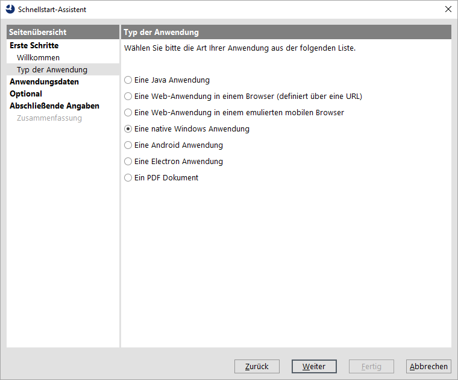
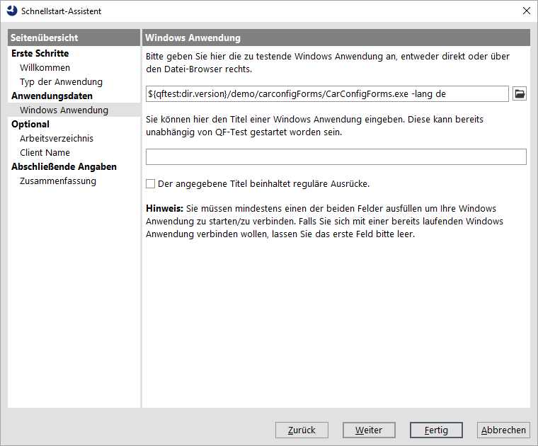
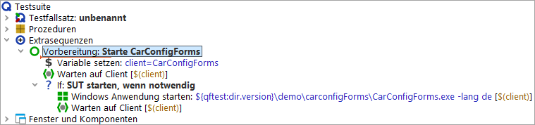
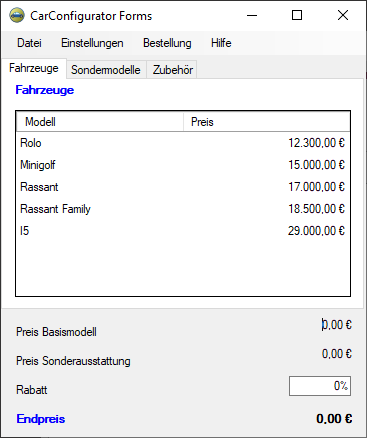

| Version 6.0.3 |
Zu Beginn muss die zu testende Anwendung aus QF-Test heraus gestartet werden. Es gibt einen Schnellstart-Assistenten, der uns hilft, eine passende Startsequenz zu erzeugen.
Der Assistent startet mit einem Willkommen und allgemeinen Informationen.
|
|  |
||
|
| Abbildung 20.1: Der Schnellstart-Assistent | ||
Im zweiten Schritt werden Sie dazu aufgefordert, die Art der zu testenden Applikation auszuwählen.
|
|  | ||
|
| Abbildung 20.2: Auswählen der SUT Art | ||
Nun werden Sie nach dem Windows Programm gefragt.
.../qftest-6.0.3/demo/carconfigForms/ in Ihrer QF-Test
Installation.
CarConfigForms.exe.
Das zweite Feld kann in unserem Fall leer bleiben. Jedoch soll erwähnt werden, dass es auch möglich ist QF-Test mit einer bereits laufenden Windows Anwendung zu verbinden. Dies geschieht durch Angabe des Fenstertitels im besagten zweiten Feld. Auch reguläre Ausdrücke für Fenstertitel sind hier möglich.
HinweisIm Bild sieht man eine weitere Möglichkeit: Die Verwendung der Variablen
${qftest:dir.version} am Beginn, die automatisch zum versionsspezifischen
Installationsverzeichnis von QF-Test expandiert. Details zu speziellen QF-Test Variablen finden
Sie im Handbuch Kapitel Variablen.
|
|  | ||
|
| Abbildung 20.3: Auswahl der Programm Datei | ||
Wir gelangen direkt zur Zusammenfassung, die beschreibt, wie es nach dem Beenden des Schnellstart-Assistenten weiter geht.
|
|  |
||
|
| Abbildung 20.4: Zusammenfassung | ||
Die generierte Startsequenz Starte CarConfigForms erscheint in den "Extrasequenzen" der Testsuite und enthält drei Schritte:
HinweisDie Information, ob der Client bereits läuft wird im ersten 'Warten auf Client' Knoten einer Variable "isSUTRunning" gespeichert und in der folgenden "If" Bedingung ausgewertet. Sie können dies in den entsprechenden Kontendetails sehen. Diese Art der bedingten Ausführung wird später noch im Detail erklärt.
|
|  | ||
|
| Abbildung 20.5: Generierte Startsequenz | ||
Probieren wir sie aus:
Im folgenden Bild ist das Fenster des SUT Client dargestellt, das nun erscheinen sollte. Da nach dem Abspielen der Fokus zurück zu QF-Test wandert, kann es sein dass das Fenster der Testsuite die Demoanwendung dann verdeckt.
|
|  | ||
|
| Abbildung 20.6: Das Fenster des "CarConfigurator" | ||
Am Ende dieses Abschnitts wollen wir unsere Testsuite speichern.
Dokumente in Ihrem Benutzerverzeichnis.
MeineErstenTests.qft.
| Letzte Änderung: 6.9.2022 Copyright © 2002-2022 Quality First Software GmbH |